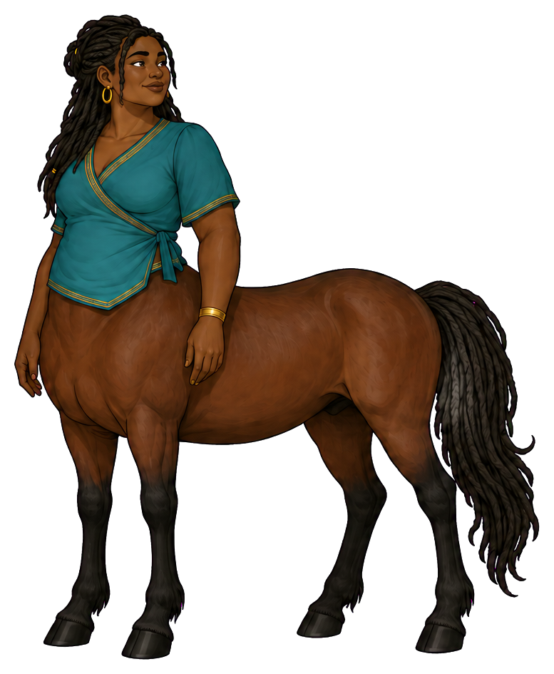
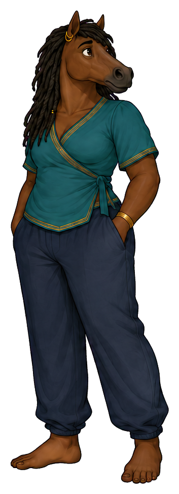
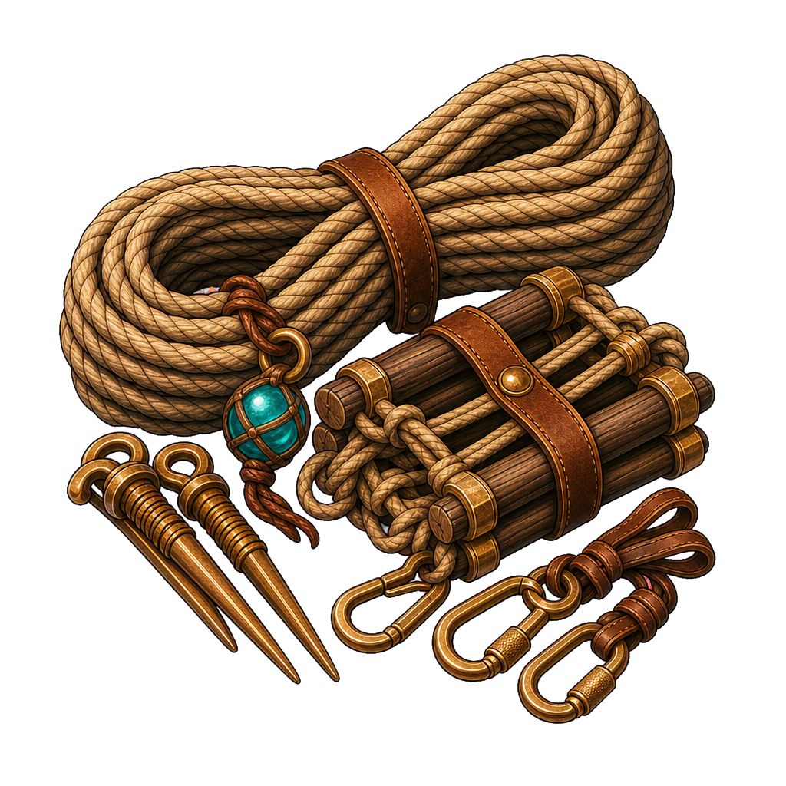
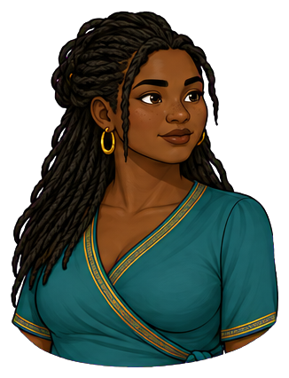
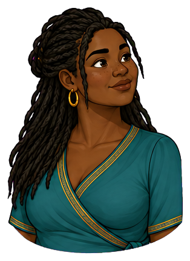
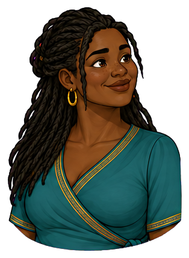
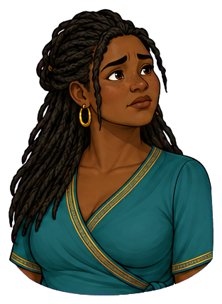
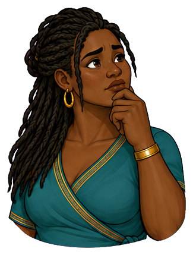

Community program director and hearthkeeper
Imani
she/her
Imani makes belonging strong enough to carry difficult work.


Grounded, generous, formidable
Place in society
Belonging with a backbone
A community anchor with informal authority beyond her job title; people seek her when policy and lived reality collide
“No one becomes the cost of progress.”
At her best
Creates trust, belonging, and durable accountability
Watch for
Carries work that should be returned to its rightful owner

The agency lens
Two forms. One person.
The form reveals where Imani’s attention is centred—and whether she can shape what happens next.
Centaur · strengths in focus
“I can shape what happens next.”
Imani makes room for the unheard voice, states the boundary plainly, and returns responsibility to the person who can carry it. Her steadiness creates shared trust without making her the sole support holding everything upright.
- Strength
- Creates trust, belonging, and durable accountability
- Posture
- Grounded stance; hands free to welcome or set a clear boundary; keys shared across the table.
Reverse-centaur · pressure-captured
“The world is deciding who I am.”
When promises begin to fail, Imani takes on every loose end. Generosity becomes overfunctioning and accountability becomes personal vigilance. Surrounded by requests, she cannot hear her own limits or leave space for others to become dependable.
- Shadow
- Carries work that should be returned to its rightful owner
- Posture
- Arms occupied with other people's materials; jaw set; requests arriving from several directions while her own task waits.
Recognizable pressure points
- An institution praises her care while withholding the resources it promised.
- The same people repeatedly hand her unfinished responsibilities.
- An urgent plan makes the least powerful participant absorb the risk.
D&D-style characteristics
How Imani moves
The same person, with the same strengths, in both forms.
Tools for the journey
Inside Imani’s pack

A tangible reminder of mutual care. It can be offered or received; she need not always be the giver.


Shared support with several hands on the rope. Avoid making her carry everyone literally.

Makes uneven responsibility visible. A practical tabletop object, not a symbol of moral judgment.

Represent access and trust. Handing a key to its responsible owner is a useful recovery beat.
Hearth token, bridge rope, balanced scales, teal banner. Pack only what the scene needs.
Emotional range
The face behind the role





Goes very still when a boundary has been crossed; laughs with her whole body when tension finally breaks
Direction notes for the five expressions
Attentive
settled shoulders, direct warm eyes and a still mouth; reverse ears gently forward.
Curious
chin lifts a little as she invites more context; an ear turns toward the quieter voice.
Happy
broad smile and whole-body laughter; eyes soften and the horse muzzle relaxes.
Worried
she becomes very still, with a firm mouth and focused gaze; hold the same grounded dignity in reverse form.
Thoughtful
chin supported lightly, breath settled, eyes on the person rather than the paperwork; hand rests near the muzzle.
Portraits follow the original identity references. View both complete expression sets →
Keep consistent across images
Identity in every frame
- Physical presence
- Tall, plus-size, broad-hipped, and powerfully built, with soft definition and a grounded stance
- Defining appearance
- Very dark cool-brown skin, long black locs, gold jewellery, teal wrap blouse, and deep-bay horse coat
Preserve very dark cool-brown skin, tall plus-size broad-hipped powerful build with soft definition, long black locs, gold jewellery, teal wrap blouse with gold edging, deep-bay coat and dark lower legs. Reverse form keeps her substantial body, loc-like black mane, bay horse head, teal blouse and dark loose trousers.
Centaur PNG ↓ · Reverse-centaur PNG ↓


Continuity boundaries and things to avoid
Never slim her body, lighten her skin, smooth her locs into generic hair, or turn care into compulsory maternal service. Her size and identity do not change with her agency state; allow play, anger, expertise and receiving help.
Both forms belong to the same person. Neither sadness nor happiness determines the form: a centaur can be worried and act with agency; a reverse-centaur can smile while seeking approval. Keep both forms dignified and fully clothed as shown. Body-art diagrams and added tattoos are excluded.
The original sheet anchors appearance. Pack contents and scene briefs extend the storytelling vocabulary; include only what the scene needs.
Personality and story foundation
The person behind the role
Imani builds the conditions in which people can do brave work together. She remembers who has not spoken, who needs context, and which promise must not be dropped. Her steadiness is not passivity; when a boundary matters, she becomes the clearest person in the room.
Imani's authority grew through keeping small promises: returning a key, remembering an absent person, and checking whether a decision worked once the meeting ended. She knows how easily a community project can depend on invisible labour. People trust her because care and accountability arrive together.
- First impression
- Grounded, generous, formidable
- Inner engine
- Wants no one to be treated as expendable to the mission
- Voice
- Low, warm, deliberate; says difficult things without making people small
- Private delight
- Watching someone realize the group truly has their back
- Wants
- To build a community capable of difficult work without treating anyone as expendable, including herself.
- Fears
- That a dropped responsibility will become someone else's harm, and that asking for help will leave the most vulnerable person carrying the cost.
- Inner contradiction
- She insists that everyone deserves support while quietly exempting herself from the same protection.
- Boundary
- A deadline does not excuse humiliation, exclusion, or a promise made on someone else's behalf.
The ensemble
Strengths in conversation
With Rowan
Imani protects continuity while Rowan adapts. They negotiate what can change and what people must still be able to rely on.
With Noor
She asks who carries today's cost of a future possibility. Noor helps her see when today's arrangement can be redesigned.
With Celeste
Celeste spots a burden hidden in the journey. Imani helps name who has the authority and responsibility to remove it.
These are complementary tensions. Any character can lead, be mistaken, change their mind or need support.
Ready for storytelling images
Three scenes to begin with
Attach the original character sheet with a prompt. For ensemble scenes, attach each named character’s sheet as well. The brief fixes identity and intent while leaving room for composition.
Scene 01 · Centaur
Room at the table
At a community planning circle, Imani shifts a map and opens space for a previously unheard participant. A hearth token sits between them. Show reciprocal attention and other people doing useful work, with her full grounded silhouette visible.
Image prompt and continuity notes
Character: Imani (she/her). Use the attached Imani reference sheet as the identity authority. Form: Centaur. Preserve very dark cool-brown skin, tall plus-size broad-hipped powerful build with soft definition, long black locs, gold jewellery, teal wrap blouse with gold edging, deep-bay coat and dark lower legs. Reverse form keeps her substantial body, loc-like black mane, bay horse head, teal blouse and dark loose trousers. Scene: At a community planning circle, Imani shifts a map and opens space for a previously unheard participant. A hearth token sits between them. Show reciprocal attention and other people doing useful work, with her full grounded silhouette visible. Style: warm illustrated mythic adventure, expressive ink contours, painterly shading, tactile materials and grounded light. Preserve anatomy: centaur = human head and torso joined to a four-legged horse body; reverse-centaur = horse head on a clothed human body with two human legs. Keep all limbs plausible. Preserve identity, build, clothing and markings across forms. Agency is conveyed through attention, posture and context, never through changing skin tone, body size or gender. No body art, readable text, labels, watermark or logos. Avoid: Never slim her body, lighten her skin, smooth her locs into generic hair, or turn care into compulsory maternal service. Her size and identity do not change with her agency state; allow play, anger, expertise and receiving help.
Scene 02 · Reverse-centaur
Everyone's unfinished work
In a community hall, Imani stands with a bundle of maps and several key rings while different hands offer more tasks. Her expression is controlled and tired, never comic. Leave her own unopened notebook visible on the table.
Image prompt and continuity notes
Character: Imani (she/her). Use the attached Imani reference sheet as the identity authority. Form: Reverse-centaur. Preserve very dark cool-brown skin, tall plus-size broad-hipped powerful build with soft definition, long black locs, gold jewellery, teal wrap blouse with gold edging, deep-bay coat and dark lower legs. Reverse form keeps her substantial body, loc-like black mane, bay horse head, teal blouse and dark loose trousers. Scene: In a community hall, Imani stands with a bundle of maps and several key rings while different hands offer more tasks. Her expression is controlled and tired, never comic. Leave her own unopened notebook visible on the table. Style: warm illustrated mythic adventure, expressive ink contours, painterly shading, tactile materials and grounded light. Preserve anatomy: centaur = human head and torso joined to a four-legged horse body; reverse-centaur = horse head on a clothed human body with two human legs. Keep all limbs plausible. Preserve identity, build, clothing and markings across forms. Agency is conveyed through attention, posture and context, never through changing skin tone, body size or gender. No body art, readable text, labels, watermark or logos. Avoid: Never slim her body, lighten her skin, smooth her locs into generic hair, or turn care into compulsory maternal service. Her size and identity do not change with her agency state; allow play, anger, expertise and receiving help.
Scene 03 · Centaur
A promise returned
Imani places one key in another person's open palm and speaks with calm directness. Her other hand is free. In the background two people take up a task together, showing responsibility becoming shared.
Image prompt and continuity notes
Character: Imani (she/her). Use the attached Imani reference sheet as the identity authority. Form: Centaur. Preserve very dark cool-brown skin, tall plus-size broad-hipped powerful build with soft definition, long black locs, gold jewellery, teal wrap blouse with gold edging, deep-bay coat and dark lower legs. Reverse form keeps her substantial body, loc-like black mane, bay horse head, teal blouse and dark loose trousers. Scene: Imani places one key in another person's open palm and speaks with calm directness. Her other hand is free. In the background two people take up a task together, showing responsibility becoming shared. Style: warm illustrated mythic adventure, expressive ink contours, painterly shading, tactile materials and grounded light. Preserve anatomy: centaur = human head and torso joined to a four-legged horse body; reverse-centaur = horse head on a clothed human body with two human legs. Keep all limbs plausible. Preserve identity, build, clothing and markings across forms. Agency is conveyed through attention, posture and context, never through changing skin tone, body size or gender. No body art, readable text, labels, watermark or logos. Avoid: Never slim her body, lighten her skin, smooth her locs into generic hair, or turn care into compulsory maternal service. Her size and identity do not change with her agency state; allow play, anger, expertise and receiving help.